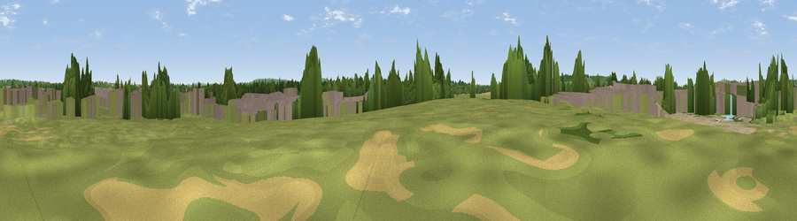

Viewpoint near Fairford Leys
#40360 in England · top 55% of its area beats it · near Fairford Leys · access?Where it is
The exact computed spot (SP 78916 15335). Click the marker for map links.
Public access: no public right of way or access land is recorded at this exact spot — it may be on private land. Computed from Natural England's CRoW access layer and OpenStreetMap rights of way — not the legal definitive map. Always verify locally.
The view, rendered

A 360° render of this exact spot computed from the terrain model, tree cover and land cover — summer colours, afternoon light, calibrated against photographs of famous viewpoints. Real trees, hedges and buildings will differ in detail.
The panorama
Grey silhouette: terrain skyline in each direction (720 bearings, Earth curvature and refraction included). Dashed green: skyline with trees (+15 m) and buildings (+8 m) as obstacles. Blue strip: how far the ground is visible on each bearing.
Where the view opens
Wedge length = distance to the farthest visible ground on that bearing (vegetation-aware). Rings at 10, 25 and 50 km.
What fills the view
48% grassland · 24% built-up · 13% woodland · 10% cropland · 4% bare ground · 1% water
Angular shares of the visible panorama (visual magnitude), not map area. Landscape diversity 0.60 (0–1 Shannon).
Key numbers
More beautiful places nearby
The staircase of upgrades: each row has a higher view potential than everything closer. Driving times are estimates from straight-line distance, calibrated against real road routing — check an actual route before setting out.
| Place | Direction | Drive | Score |
|---|---|---|---|
| Viewpoint near Upper Winchendon | WSW · 2 km | ~6 min | 29.7 |
| Viewpoint near Upper Winchendon | W · 3 km | ~7 min | 54.5 |
| Viewpoint near Upper Winchendon | WSW · 6 km | ~12 min | 58.9 |
| Quainton Hill | NNW · 7 km | ~15 min | 59.7 |
| Viewpoint near Quainton | NNW · 8 km | ~15 min | 64.9 |
| Viewpoint near Ashendon | W · 9 km | ~17 min | 65.0 |
| Beacon Hill | SSE · 10 km | ~20 min | 72.7 |
| Coombe Hill Monument | SE · 10 km | ~20 min | 75.5 |
51.83107, -0.85620 · source: osm viewpoint · position refined by local search. Computed location — check access rights before visiting.